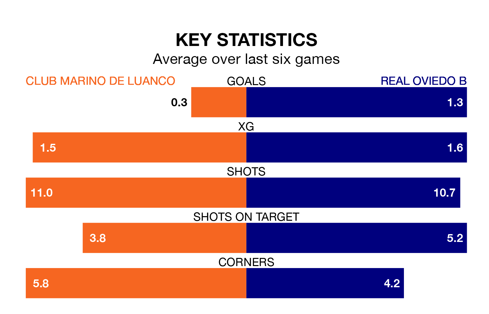

Club Marino de Luanco welcome Real Oviedo B to Estadi Municipal de Miramar on Sunday looking to pick up points to end their three-game losing streak.
Club Marino de Luanco's struggles have left them with five points from their last six Segunda División RFEF Group 1 matches, while their opponents have earned eight from a possible 18.
In the last 10 years, Club Marino de Luanco and Oviedo B have played each other on six occasions. Club Marino de Luanco won two of them, Oviedo B three, and they drew once.
On average, Club Marino de Luanco scored 1.0 goal and Oviedo B 1.3 in those matches.
Their last meeting was on November 18, when they played out a 1-1 draw.
Oviedo B are 15th in the table after 28 games, of which they have won six and drawn 12, earning 30 points.
Club Marino de Luanco are two places ahead of the away team in 13th, with six wins and 14 draws putting them on 32 points.
With 21 goals in 28 games so far this season, the hosts are the league's second-lowest scorers with 0.8 goals per game. But they are conceding fewer than average too, letting in 20 goals at a rate of 0.7 per game.
Oviedo B are also below average scorers, with 0.9 goals per game, compared to a league average of 1.2. They have conceded 1.2 goals per game.
Club Marino de Luanco's last match was on Sunday, a 2-1 loss against Pontevedra CF.
Oviedo B drew 2-2 with Racing Santander B last time out, also on March 24.
Updated: 12:39 (UTC), 26/03/24